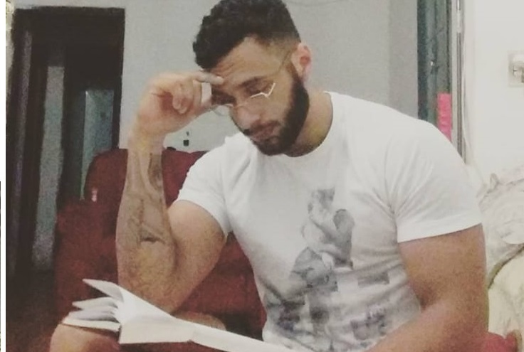

Brasileiro,mineiro, e morador da longínqua cidade de Teófilo Otoni, recentemente começou a estudar desenvolvimento de software na dignissima empresa Trybe.
Habilidades Especiais:
Primeiramente, se manter casado é sim uma habilidade, e independente das circunstâncias, se você acha uma PowerRanger, você casa com ela!
Apos um periodo parado no tempo, juntou-se com o temido Benjamin Thomaz (que curiosamente é seu pai),e começaram a desbravar o mundo da terraplanagem.
Formação em pedagogia foi interessante, longa, e gratificante, como deve ser!
Patricar arquearia é uma atividade constante na vida do joven Patrick.
O rapaz realmente aparenta ser simpatico!